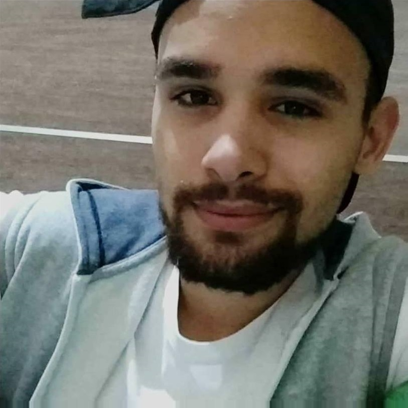
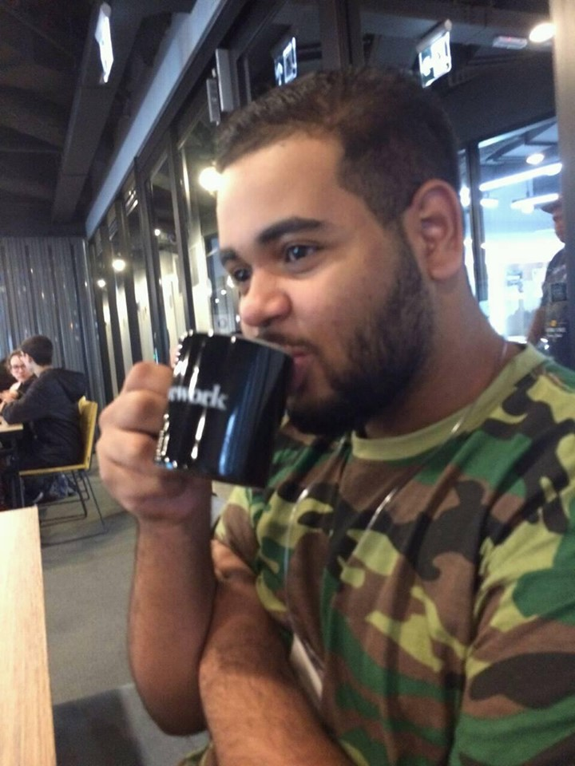

Igor Teixeira - Desenvolvedor Back-end
Fotos Da Cidade
A noite... A noite vemos quem somos na cidade, na cidade nos conhecemos e da cidade saimos, mas não
saimos dela. pois ela esta em todo lugar, e Ninguém escapa dela !!!

< Foto tirda Por Igor Teixeira />
___________________________________________________
Rafael Giovanni - Desenvolvedor Front-End
Somos Quem Somos
precisamos nos amar, ser quem somos... gostar doque eramos ontem mesmo entendendo o imperfeccionismo,
mas principalmente estarmos amando quem somos hoje
< edição com phtoshop />
___________________________________________________

João Gabriel - Desenvolvedor Mobile
Código Frenético
Dentro de um desenvolvimento precisamos ter comprometimento... com o cliente e principalmente
com nós mesmos. pois o nosso corpo e o cérebro é a nossa principal ferramente, devido a isso
precisamos entender nossos Limites e nos respeitarmos

< Código de João Gabriel />
___________________________________________________
 Gabriel Garcia - Desenvolvedor Front-End
Memes
Oque seria de um Mundo sem memes? os memes servem para alimentar a alma e fazer com que nós
saíamos um pouco do mundo real de cansaço e seriedade para adarmos risadas e ficarmos indignados
com algumas coisas...
Gabriel Garcia - Desenvolvedor Front-End
Memes
Oque seria de um Mundo sem memes? os memes servem para alimentar a alma e fazer com que nós
saíamos um pouco do mundo real de cansaço e seriedade para adarmos risadas e ficarmos indignados
com algumas coisas...
< Meme Criado Por Gabriel />
___________________________________________________
 Marcos Paulo - Desenvolvedor Mobile
humanização dos animais
a humanização dos animais é de certa forma errada, pois os humanos somos apenas nós
porém não tem nada mais lindo que alguns animais muito fofos com coisas humanas kkk
Marcos Paulo - Desenvolvedor Mobile
humanização dos animais
a humanização dos animais é de certa forma errada, pois os humanos somos apenas nós
porém não tem nada mais lindo que alguns animais muito fofos com coisas humanas kkk
< edição com phtoshop e foto remasterizada />